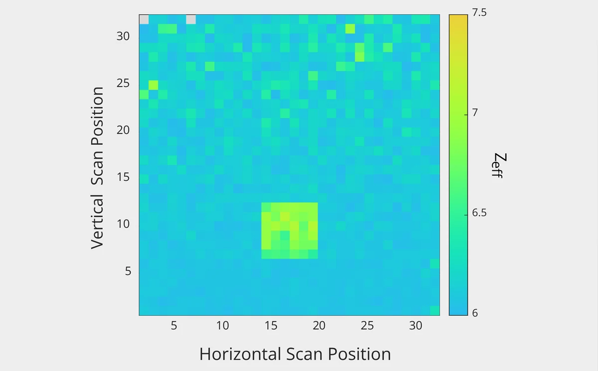

The 26 GHz bench as used in LATINCOM 2026. The project page explains each board.
RF and mmWave. Since September 2025, in Dr. Hugo Condori's group at UPB, with researchers from Universidad Mayor de San Andrés.
- Problem
- Characterizing mmWave amplifiers and filters normally takes vector signal generators, signal analyzers and network analyzers that cost upwards of $100,000 and that many labs, ours included, do not have.
- My role
- I calibrate the bench (PLL synthesizer, RMS power detectors, SDR), write the Python and MATLAB scripts that automate acquisition and processing, and characterized a power amplifier and a band-pass filter from measured data only, which became my first-author paper. I also collected the data for the power-regulation work and took part in the predistortion experiments.
- Result
- Six IEEE conference papers. The testbed reaches a residual EVM of 1.27% with 256-QAM 5G NR at 26 GHz, resolves a filter's 24.25 to 28 GHz passband without a network analyzer, and exposes AM-AM compression from raw I/Q samples. With memory-polynomial predistortion the transmitter's EVM falls from 6.47% to 2.65%.
Project page
First-author paper
ISCAS 2026 paper (DOI)

Height profiles along one range line: reference, beamforming and Capon (top); FISTA, teacher and student (bottom).
Signal processing. Since August 2026, advised by Dr. Edgar Salazar, with Universidad Católica Boliviana.
- Problem
- SAR tomography separates scatterers in height by combining several radar passes over a scene. Every pass is costly, and with fewer of them the ground, roofs and facades that share a radar cell become hard to tell apart.
- My role
- I built synthetic urban, forest–savanna and mixed datasets with known ground truth, implemented the classical baselines (beamforming, Capon, ISTA/FISTA) and trained a deep-unrolled network by knowledge distillation: a teacher that sees 8 acquisitions guides a student that sees 4.
- Result
- Preliminary, on synthetic urban scenes: with 4 acquisitions the student lowers the mean Wasserstein-1 error in layover pixels by 34% against ISTA (4.08 m to 2.71 m).
Project page
Poster (PDF, in Spanish)

Reconstructed effective atomic number. The bright square is the PMMA block behind the wall.
Dual-energy X-ray backscatter imaging with K-edge filters
Signal processing. Since August 2026, advised by Dr. Edgar Salazar.
- Problem
- Backscatter scanners inspect an object from one side, for example through a wall. Telling materials apart needs two energy bands, and with a conventional source the two spectra overlap and add noise to the estimate.
- My role
- I ran the Monte Carlo simulations in GATE/Geant4 of an 80 kVp source with K-edge filter pairs (Ce–Mo and W–Er, spectra from SPEKTR) and worked on the two-material decomposition in MATLAB, on a carbon–zinc basis.
- Result
- In simulation, PMMA behind a 3 mm aluminum wall was identified with under 5% error in effective atomic number (6.82 ± 0.17, against an expected 6.48 to 6.56).
Poster (PDF)
Citation